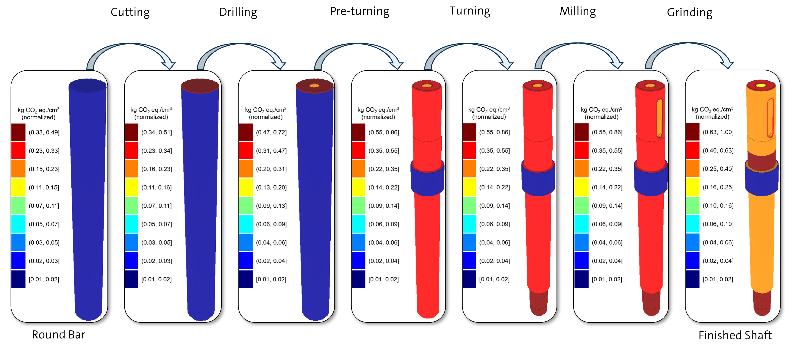

Similar to a Finite Element Analysis (FEA) visualization, the 3D LCA visualization maps the environmental impact of manufacturing a given design to the product geometry and its features.
The visualization highlights regions of CO2 emission concentration, with values expressed in kg CO2 eq. / cm³.

Data is allocated sequentially, based on the processes modeled in LCA software to manufacture the product (as shown in the image above).
With each step, the environmental impact of the process is mapped to the geometric features created or affected by the process.
The final result highlights the total environmental cost of manufacturing specific geometric features.
Note that intermediate processing steps will not be presented during this study, only the final results.
Training task
Goal: Familiarize yourself with the study interface and data.
Instructions:
Watch the Video: Start by watching the brief explanation video above. If you need to rewatch it later, you can find it by pressing the “Help” button in the top right of the study interface.
Explore the Tabs: Navigate through the tabs above to access various data about the Shaft Designs you will be working with throughout this study. Remember, the same data will be available during the actual tasks. Note that the data for Shaft Design B will only be available during the third (final) task, as it is not needed for the first two tasks.
Task Relevance: Keep in mind that not all data may be necessary for accomplishing a task.
Ready to Start: Once you are done familiarizing yourself with the study interface, type “ready” in the answer box in the left panel and click “Next” to move on to the first task.